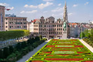

Bruxelas

Budapeste

Lisboa

Londres

Milão
Paris

Praga

Reykiavik
Roma
Varsovia

Viena
Bruxelas
Budapeste
Lisboa
Londres
Milão
Paris
Praga
Reykiavik
Roma
Varsovia
Viena
Conhecimento é poder. Quanto mais você souber sobre o destino, mais vai poder otimizar seu tempo e dinheiro quando chegar lá.
Não te feches demasiado num itinerário. Vais conhecer diferentes pessoas e vais ouvir falar de sítios de que nunca tinhas ouvido falar antes quando lá estiveres.
Uma semana antes da viagem tenha atenção às temperaturas que vão estar. Calor? Frio? Neve? Período chuvoso?
É diferente fazer uma mala para ir para um país árabe ou para ir a Paris. Alguns sitios pedem roupas discretas. Outros, roupas mais elegantes. Tem de fazer a mala certa! Esse é o grande segredo.
É importante ter atenção ao que se leva para uma viagem. Deve sempre pensar se é algo que será mesmo necessário ou se vai só ocupar espaço!
Assim poderá ter mais probabilidade de apanhar promoções e visitar os sitios mais tranquilamente, sem uma grande quantidade de turismo.
É sempre bom poder estar descansado caso haja algum imprevisto para a altura da viagem e não possa fazê-la.
A melhor fonte de informação muitas vezes é são as pessoas que moram no local, então quando estiver no destino, aproveite para falar com quem vive por lá.
Mar
Ericeira
Onde o mar é mais azul
Tranquilidade
Gerês
Onde pode descansar
História
Lisboa
Um lugar com história
Classe
Vilamoura
Um lugar especial
Cultura
Porto
Um sítio diferente
Viagens Low-Cost?
Veja as nossas opções!